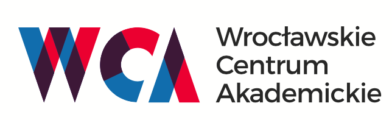
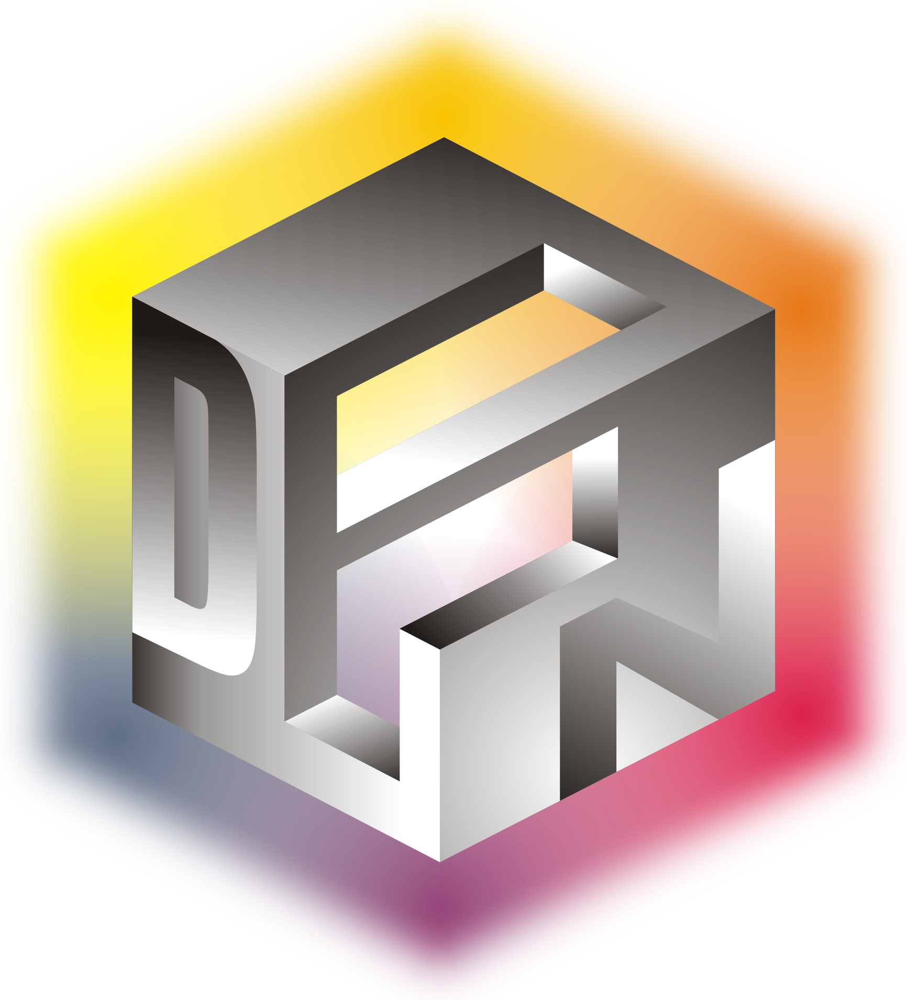
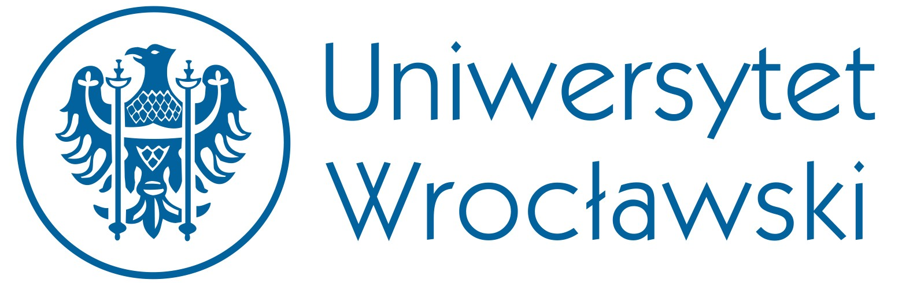

What is Falling Walls Lab?
Falling Walls Lab is an international forum for the next generation of early-career innovators, trailblazers, creators, and visionaries. Its aim is to promote exceptional ideas and connect promising scientists and entrepreneurs from all fields on a global level. Participants are given the opportunity to present their research, business model, or initiative to peers, a high-calibre jury of experts from academia and business, and the general public – in just 3 minutes.
Who is it for?
If you are a young innovator and visionary in science or business, this is a big chance for you to become world famous!
What is the application deadline?
The application deadline is 14th September 2024.
When will the event take place?
The event will take place on 15th October 2024.
How can you apply?
Fill in the form by clicking the big red 'Apply Now' button. Check out the Information section for more details.
Sponsors
Partners
- 
- 
- 